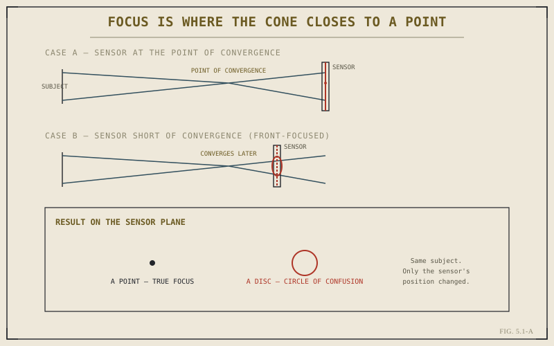

Chapter 4.7 closed Part IV on a deliberate act of choice: deciding, frame by frame, which brightness values a sensor is allowed to lose — highlights sacrificed for shadow detail, or the reverse. That decision governs how much light reaches the sensor and where it lands on the tonal scale. It says nothing about a second, equally consequential decision that has been quietly waiting throughout the entire discussion of exposure: which part of the frame is actually sharp. Part V turns to that question, starting with what focus means at the level of physics, before it means anything at the level of technique.
Every Point of Light Is a Cone, Not a Dot
Light leaving a single point in the scene — a highlight in an eye, the corner of a leaf — doesn't travel to the lens as a single ray. It arrives as a spreading cone, entering the lens across its entire aperture opening simultaneously. The lens's job is to take that diverging cone and bend it back inward, converging it toward a single point again on the far side. Where that convergence happens — the exact distance behind the lens at which the cone closes back down to a point — depends on how far the original subject sat in front of the lens. Move the subject closer or farther, and the distance at which the cone converges moves with it.
The Circle of Confusion: What "Sharp" Actually Means
A sensor is a flat plane sitting at one fixed distance behind the lens. If that plane happens to sit exactly where a given point's cone has converged back to its smallest, the sensor records something very close to a point — the image looks sharp. If the plane sits in front of or behind that convergence distance, it intersects the cone while it's still narrowing or already widening again, and instead of a point it records a small disc. That disc has a name: the circle of confusion. It's the actual, physical unit that "in focus" and "out of focus" are built from — not a vague impression, but a measurable spot size on the sensor plane.

Same subject, same lens — only the sensor's position relative to the cone's convergence point changed.
"Acceptably Sharp" Is a Threshold, Not a Binary
No real lens and sensor combination produces literal, infinitesimal points even at perfect focus — diffraction and the sensor's own pixel pitch put a floor under how small a circle of confusion can ever get. What photography treats as "sharp" is really a circle of confusion small enough that a viewer, at a normal viewing distance and print or screen size, can't distinguish it from an actual point. That threshold is perceptual, not absolute, which is why the same file can look tack-sharp on a phone screen and visibly soft printed at poster size: the circle of confusion on the sensor didn't change, but the size at which it's finally viewed did.
A lens does not choose what's sharp. It defines exactly one distance at which a given point's light converges back to its smallest size, and everything else in the frame is sharp or blurred only by how far it happens to sit from that one distance.
Focus Is a Plane, Not a Line
Because a conventional lens is symmetric around its optical axis, every point at a given subject distance converges at the same distance behind the lens as every other point at that distance — a face, a wall, a row of fence posts, so long as they're equally far from the camera, all come to focus together. The set of all points in the scene sitting at that one distance forms a plane, roughly parallel to the sensor, and it's that entire plane — not a single subject, not a single line — that a lens brings into focus at once. Anything nearer or farther than that plane departs from perfect convergence by some amount, and how much departure still reads as acceptably sharp, rather than as a small disc, is the exact question Chapter 5.2 takes up next: depth of field is nothing more than the tolerance built around this one plane of focus.
Key Concepts to Remember
- Light from a point in the scene enters the lens as a cone and converges back to a point at one specific distance behind the lens.
- When the sensor intersects that cone before or after true convergence, a point records as a disc — the circle of confusion — instead of a point.
- "Acceptably sharp" is a perceptual threshold on the circle of confusion's size, not literal point-for-point convergence.
- Focus applies to an entire plane at one subject distance, not a single point — the basis for depth of field in Chapter 5.2.
Cross-References Forward
| → Ch. 5.2 | Depth of Field as a Creative Tool — the tolerance built around the single plane of focus this chapter defines. |
| → Ch. 4.7 | Exposing for Highlights vs. Shadows — the exposure decision this chapter pivots away from. (Not yet published.) |
| → Ch. 5.6 | Hyperfocal Distance — where this same convergence logic gets pushed to its most practical extreme. |